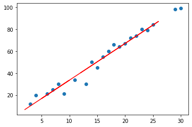
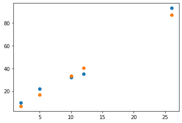

Definition¶
Subdivision en échantillons d’apprentissage¶
Scikit-learn est une bibliothèque d’apprentissage automatique open source qui prend en charge l’apprentissage supervisé et non supervisé. Il fournit également divers outils pour l’ajustement de modèle, le prétraitement des données, la sélection et l’évaluation de modèle, et de nombreux autres utilitaires.
Scikit-learn fournit des dizaines d’algorithmes et de modèles d’apprentissage automatique intégrés, appelés estimateurs . Chaque estimateur peut être ajusté à certaines données en utilisant sa méthode d’ ajustement.
Construction du modèle sur l’échantillon d’apprentissage¶
import pandas as pd
import numpy as np
import matplotlib.pyplot as plt
from sklearn import linear_model
from sklearn.metrics import mean_squared_error
from sklearn.model_selection import cross_val_score, train_test_split, GridSearchCV
data = pd.read_csv("reg_simple.csv")
x = data.iloc[:,0].values.reshape(-1, 1)
y = data.iloc[:,1].values.reshape(-1, 1)
x_test, x_app, y_test, y_app = train_test_split(x,y,test_size=0.8,random_state=3)
model = linear_model.LinearRegression()
model.fit(x_app, y_app)
model.coef_
array([[3.34397362]])
Prédiction sur l’échantillon test¶
y_pred = model.predict(x_test)
plt.scatter(x_app, y_app)
plt.plot(x_test, y_pred, color="red")
plt.show()

plt.scatter(x_test, y_test)
plt.scatter(x_test, y_pred)
plt.show()

Evaluation sur l’échantillon test¶
mean_squared_error(y_test, y_pred)
20.46193033450774
Validation croisée (k-folds)¶

success = cross_val_score(model, x_app, y_app, cv=5)
success
array([0.97836078, 0.96081355, 0.98961965, 0.93115634, 0.91615886])
plt.plot(success)
[<matplotlib.lines.Line2D at 0x26ac7fcb940>]
model.score(x_test, y_test)
0.9751022944435562